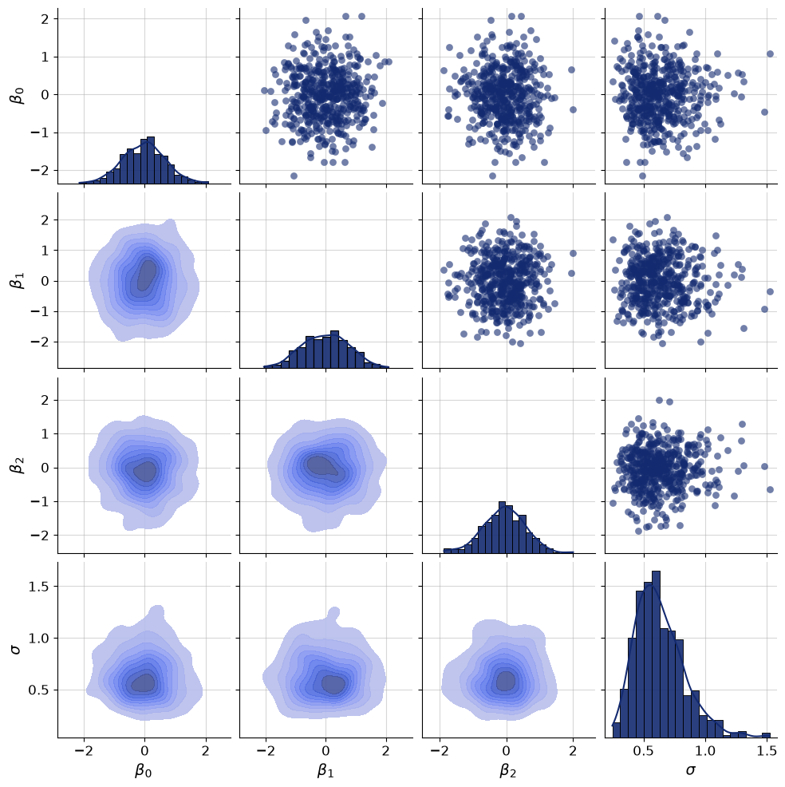
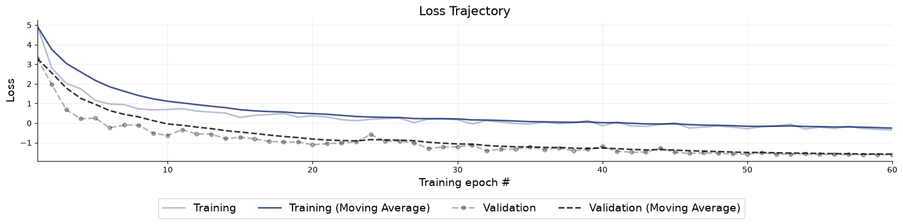
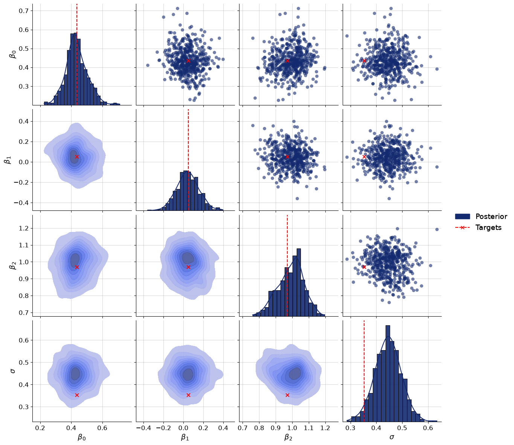
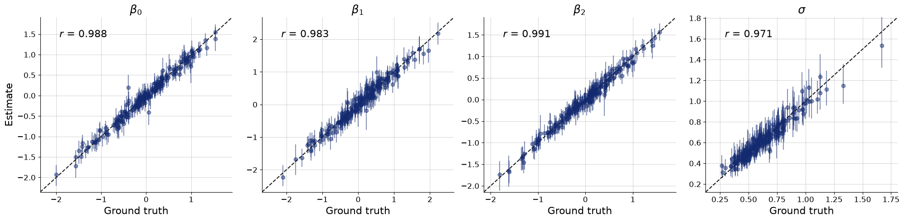
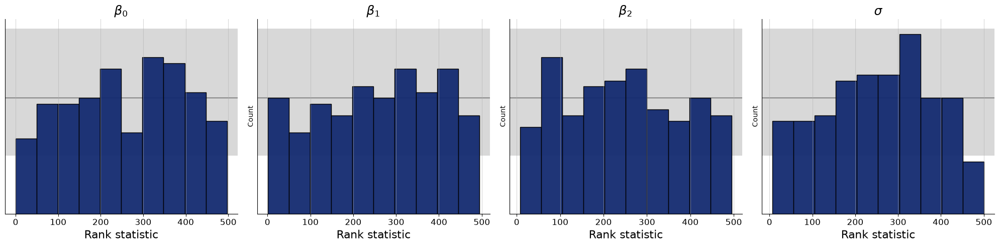
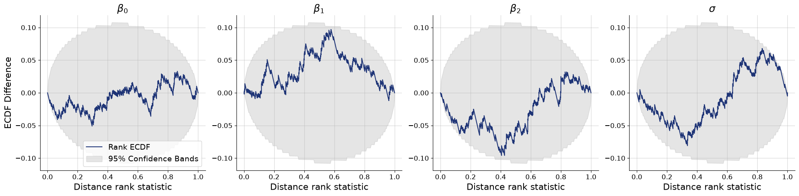
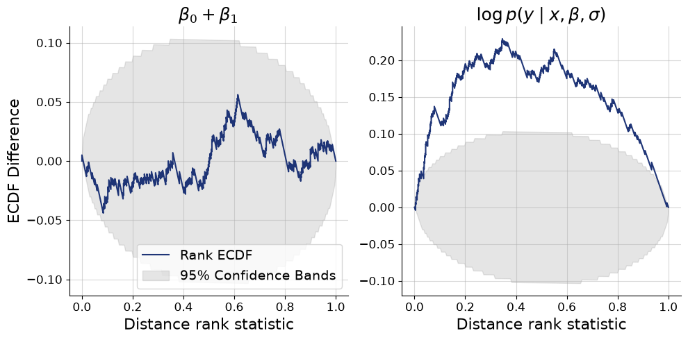
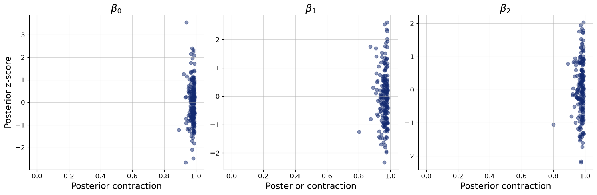
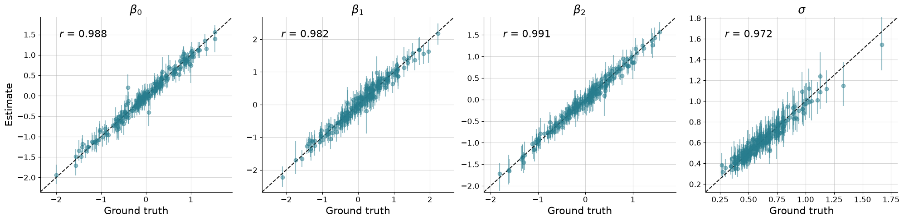

5. Generalized linear models#
Authors: Paul Bürkner, Lars Kühmichel, Stefan T. Radev
5.1. Introduction#
We will estimate a Gaussian generalized linear model with two predictors, a sinusoidal feature, an interaction, and predictor-dependent noise. The mean is linear in the regression coefficients, with an identity link and known variance weights.
This is the same model used in Foundation models as backbones. Here, we learn a summary network jointly with the posterior estimator. That notebook replaces the summary network with pretrained embeddings.
We keep the usual workflow: define a simulator, build an adapter, train the networks, and check the posterior. Training covers different numbers of observations, so one estimator can handle datasets of different sizes. We prefer the torch backend, as naively passing dynamic batch sizes through JAX triggers recompilation and can be slow in early epochs.
import os
os.environ["KERAS_BACKEND"] = "torch"
import numpy as np
from pathlib import Path
import bayesflow as bf
INFO:bayesflow:Using backend 'torch'
WARNING:bayesflow:
When using torch backend, we need to disable autograd by default to avoid excessive memory usage. Use
with torch.enable_grad():
...
in contexts where you need gradients (e.g. custom training loops).
BayesFlow separates simulation, preprocessing, and inference:
simulatorscombine priors, likelihoods, and context variables.adaptersprepare data for the networks.networksprovide summary and inference architectures.estimatorsconnect the networks and define their training objectives.
A BasicWorkflow brings these pieces together.
# avoid scientific notation for outputs
np.set_printoptions(suppress=True)
5.2. Generative model#
For two predictors \(x_1,x_2\), our model is
The \(0.5x_2\) term is a known offset. We infer three coefficients and the noise scale \(\sigma\). The foundation-model example uses the equivalent parameter \(\ell=\log\sigma\).
We use the same fixed 100-row predictor table as that example. A dataset with \(N\) observations uses its first \(N\) rows.
We will start with our data simulator:
rng = np.random.default_rng(2026)
design = rng.uniform(-2, 2, size=(100, 2))
def likelihood(beta, sigma, N):
x = design[:N]
mean = beta[0] + beta[1] * np.sin(1.5 * x[:, 0]) + beta[2] * x[:, 0] * x[:, 1] + 0.5 * x[:, 1]
scale = sigma * (1 + 0.4 * np.abs(x[:, 1]))
y = rng.normal(mean, scale)
return dict(y=y, x=x)
The likelihood takes the coefficients beta, the noise scale sigma, and the number of observations N. Each row contains two predictor values and one response.
data_draws = likelihood(beta=[0.3, 1.0, -0.5], sigma=0.6, N=3)
print(data_draws["x"].shape, data_draws["y"].shape)
(3, 2) (3,)
Next, we define our prior simulator to sample draws of the model parameters beta and sigma:
def prior():
beta = rng.normal([0, 0, 0], [0.7, 0.8, 0.6])
sigma = np.float32(rng.lognormal(mean=-0.5, sigma=0.3))
return dict(beta=beta, sigma=sigma)
prior_draws = prior()
print(prior_draws["beta"].shape)
print(prior_draws["beta"])
(3,)
[0.54466904 0.21256238 0.12237344]
We train over sample sizes from 20 to 100. The meta function draws one sample size per batch, so all datasets within that batch have the same shape.
def meta():
return dict(N=rng.integers(20, 101))
meta_draws = meta()
print(meta_draws["N"])
53
Combine the prior, likelihood, and sample-size distribution:
simulator = bf.make_simulator([prior, likelihood], meta_fn=meta)
Let’s draw a batch of 500 datasets:
sim_draws = simulator.sample(500)
print("N:", sim_draws["N"])
print({key: sim_draws[key].shape for key in ["beta", "sigma", "x", "y"]})
N: 37
{'beta': (500, 3), 'sigma': (500, 1), 'x': (500, 37, 2), 'y': (500, 37)}
Let’s define the parameter key and corresponding names of individual parameters for easy filtering and plotting down the line.
par_keys = ["beta", "sigma"]
par_names = [r"$\beta_0$", r"$\beta_1$", r"$\beta_2$", r"$\sigma$"]
f = bf.diagnostics.pairs_samples(
samples=sim_draws,
variable_keys=par_keys,
variable_names=par_names
)

5.3. Adapter#
The adapter collects the parameters into inference_variables, the observation rows into summary_variables, and the sample size into inference_conditions.
adapter = (
bf.Adapter()
.broadcast("N", to="y")
.as_set(["x", "y"])
.constrain("sigma", lower=0)
.sqrt("N")
.concatenate(["beta", "sigma"], into="inference_variables")
.concatenate(["x", "y"], into="summary_variables")
.rename("N", "inference_conditions")
)
The adapter broadcasts the batch’s scalar N, then uses \(\sqrt{N}\) as a condition. as_set gives the response a feature axis so it can be concatenated with the two predictors. The summary network handles joint permutations of the observation rows.
constrain("sigma", lower=0) maps the positive noise scale to an unconstrained training space and maps posterior samples back to positive values.
processed_draws = adapter(sim_draws)
print(processed_draws["summary_variables"].shape)
print(processed_draws["inference_conditions"].shape)
print(processed_draws["inference_variables"].shape)
torch.Size([500, 37, 3])
torch.Size([500, 1])
torch.Size([500, 4])
The processed shapes are:
summary_variables:(500, N, 3)for two predictors and one response.inference_conditions:(500, 1)for the sample size.inference_variables:(500, 4)for three coefficients and the noise scale.
5.4. Neural estimator#
The summary network compresses each dataset into a vector. The inference network uses that vector and the sample size to approximate the parameter posterior.
5.4.1. Summary network#
A SetTransformer respects the fact that jointly reordering the predictor–response rows does not change the posterior. It maps (batch_size, N, 3) to (batch_size, summary_dim). We use a small network with 16 summary features.
summary_network = bf.networks.SetTransformer(summary_dim=16, embed_dims=(32, 32), num_heads=(2, 2))
5.4.2. Inference network#
A two-layer spline coupling flow models the four-dimensional posterior.
inference_network = bf.networks.CouplingFlow(depth=2, transform="spline", subnet_kwargs={"widths": [64, 64]})
5.4.3. Workflow#
Workflow objects make life easier by combining inference networks and summary networks into estimators (internally).
workflow = bf.BasicWorkflow(
simulator=simulator,
adapter=adapter,
inference_network=inference_network,
summary_network=summary_network,
standardize="all",
initial_learning_rate=1e-3
)
We train on simulations generated during each epoch and monitor a separate validation batch. Torch handles the changing sample sizes without the shape-dependent recompilation encountered with JAX.
history = workflow.fit_online(epochs=60, batch_size=64, num_batches_per_epoch=100, validation_data=256, verbose=2)
INFO:bayesflow:Fitting on dataset instance of OnlineDataset.
INFO:bayesflow:Building on a test batch.
INFO:bayesflow:Training completed in 5.24 minutes.
Epoch 1/60
100/100 - 8s - 76ms/step - loss: 4.9383 - val_loss: 3.2981
Epoch 2/60
100/100 - 6s - 62ms/step - loss: 2.8052 - val_loss: 1.9665
Epoch 3/60
100/100 - 6s - 64ms/step - loss: 2.0253 - val_loss: 0.6803
Epoch 4/60
100/100 - 6s - 61ms/step - loss: 1.7459 - val_loss: 0.2184
Epoch 5/60
100/100 - 6s - 61ms/step - loss: 1.1599 - val_loss: 0.2523
Epoch 6/60
100/100 - 6s - 63ms/step - loss: 0.9701 - val_loss: -2.4383e-01
Epoch 7/60
100/100 - 6s - 59ms/step - loss: 0.9402 - val_loss: -1.0082e-01
Epoch 8/60
100/100 - 6s - 58ms/step - loss: 0.7201 - val_loss: -1.0748e-01
Epoch 9/60
100/100 - 6s - 60ms/step - loss: 0.6728 - val_loss: -5.2487e-01
Epoch 10/60
100/100 - 6s - 58ms/step - loss: 0.6926 - val_loss: -6.2547e-01
Epoch 11/60
100/100 - 6s - 56ms/step - loss: 0.7346 - val_loss: -3.3659e-01
Epoch 12/60
100/100 - 6s - 57ms/step - loss: 0.6113 - val_loss: -5.5821e-01
Epoch 13/60
100/100 - 6s - 56ms/step - loss: 0.5577 - val_loss: -5.6818e-01
Epoch 14/60
100/100 - 6s - 57ms/step - loss: 0.5109 - val_loss: -7.8808e-01
Epoch 15/60
100/100 - 6s - 59ms/step - loss: 0.2832 - val_loss: -7.2583e-01
Epoch 16/60
100/100 - 6s - 58ms/step - loss: 0.3966 - val_loss: -8.0702e-01
Epoch 17/60
100/100 - 6s - 57ms/step - loss: 0.4350 - val_loss: -9.3629e-01
Epoch 18/60
100/100 - 6s - 58ms/step - loss: 0.4853 - val_loss: -9.6659e-01
Epoch 19/60
100/100 - 6s - 58ms/step - loss: 0.3063 - val_loss: -9.6380e-01
Epoch 20/60
100/100 - 6s - 62ms/step - loss: 0.3687 - val_loss: -1.1114e+00
Epoch 21/60
100/100 - 6s - 60ms/step - loss: 0.3053 - val_loss: -1.0491e+00
Epoch 22/60
100/100 - 6s - 59ms/step - loss: 0.1740 - val_loss: -1.0150e+00
Epoch 23/60
100/100 - 6s - 59ms/step - loss: 0.1130 - val_loss: -9.6418e-01
Epoch 24/60
100/100 - 6s - 62ms/step - loss: 0.1932 - val_loss: -5.8879e-01
Epoch 25/60
100/100 - 6s - 60ms/step - loss: 0.2271 - val_loss: -9.2394e-01
Epoch 26/60
100/100 - 6s - 60ms/step - loss: 0.2491 - val_loss: -9.1746e-01
Epoch 27/60
100/100 - 6s - 58ms/step - loss: 0.0221 - val_loss: -1.0152e+00
Epoch 28/60
100/100 - 5s - 53ms/step - loss: 0.2053 - val_loss: -1.2953e+00
Epoch 29/60
100/100 - 5s - 51ms/step - loss: 0.2186 - val_loss: -1.2231e+00
Epoch 30/60
100/100 - 6s - 58ms/step - loss: 0.1647 - val_loss: -1.2089e+00
Epoch 31/60
100/100 - 6s - 58ms/step - loss: -4.1033e-02 - val_loss: -1.1276e+00
Epoch 32/60
100/100 - 6s - 58ms/step - loss: 0.1229 - val_loss: -1.4137e+00
Epoch 33/60
100/100 - 6s - 59ms/step - loss: 0.0565 - val_loss: -1.3360e+00
Epoch 34/60
100/100 - 6s - 58ms/step - loss: -2.1374e-02 - val_loss: -1.3312e+00
Epoch 35/60
100/100 - 6s - 58ms/step - loss: -5.0003e-02 - val_loss: -1.2243e+00
Epoch 36/60
100/100 - 6s - 58ms/step - loss: 0.0375 - val_loss: -1.3471e+00
Epoch 37/60
100/100 - 6s - 61ms/step - loss: -2.7967e-02 - val_loss: -1.2698e+00
Epoch 38/60
100/100 - 6s - 64ms/step - loss: 0.0158 - val_loss: -1.4153e+00
Epoch 39/60
100/100 - 4s - 42ms/step - loss: 0.1293 - val_loss: -1.3443e+00
Epoch 40/60
100/100 - 4s - 40ms/step - loss: -1.4102e-01 - val_loss: -1.1937e+00
Epoch 41/60
100/100 - 4s - 40ms/step - loss: 0.0383 - val_loss: -1.4411e+00
Epoch 42/60
100/100 - 4s - 40ms/step - loss: -1.4660e-01 - val_loss: -1.4873e+00
Epoch 43/60
100/100 - 4s - 40ms/step - loss: -1.6949e-01 - val_loss: -1.4817e+00
Epoch 44/60
100/100 - 4s - 40ms/step - loss: -7.3320e-02 - val_loss: -1.2819e+00
Epoch 45/60
100/100 - 4s - 41ms/step - loss: 0.0136 - val_loss: -1.4890e+00
Epoch 46/60
100/100 - 4s - 40ms/step - loss: -2.5869e-01 - val_loss: -1.5462e+00
Epoch 47/60
100/100 - 4s - 40ms/step - loss: -1.9986e-01 - val_loss: -1.5176e+00
Epoch 48/60
100/100 - 4s - 40ms/step - loss: -1.4998e-01 - val_loss: -1.5412e+00
Epoch 49/60
100/100 - 4s - 40ms/step - loss: -2.0934e-01 - val_loss: -1.5728e+00
Epoch 50/60
100/100 - 4s - 40ms/step - loss: -2.8883e-01 - val_loss: -1.5837e+00
Epoch 51/60
100/100 - 4s - 40ms/step - loss: -1.7974e-01 - val_loss: -1.5100e+00
Epoch 52/60
100/100 - 4s - 39ms/step - loss: -1.3435e-01 - val_loss: -1.5815e+00
Epoch 53/60
100/100 - 4s - 40ms/step - loss: -6.7913e-02 - val_loss: -1.5867e+00
Epoch 54/60
100/100 - 4s - 40ms/step - loss: -3.0223e-01 - val_loss: -1.5681e+00
Epoch 55/60
100/100 - 4s - 44ms/step - loss: -2.1107e-01 - val_loss: -1.6040e+00
Epoch 56/60
100/100 - 4s - 39ms/step - loss: -2.7979e-01 - val_loss: -1.5969e+00
Epoch 57/60
100/100 - 4s - 40ms/step - loss: -1.6991e-01 - val_loss: -1.6032e+00
Epoch 58/60
100/100 - 4s - 40ms/step - loss: -2.8225e-01 - val_loss: -1.6071e+00
Epoch 59/60
100/100 - 4s - 41ms/step - loss: -3.1963e-01 - val_loss: -1.6075e+00
Epoch 60/60
100/100 - 4s - 42ms/step - loss: -3.5247e-01 - val_loss: -1.6081e+00
f = bf.diagnostics.loss(history)

5.5. Diagnostics#
Draw posterior samples for 200 test datasets. These were not used to train the estimator or monitor validation loss.
num_samples = 500
val_sims = simulator.sample(200)
post_draws = workflow.sample(conditions=val_sims, num_samples=num_samples)
post_draws.keys()
INFO:bayesflow:Sampling completed in 0.12 seconds.
dict_keys(['beta', 'sigma'])
print(post_draws["beta"].shape)
(200, 500, 3)
post_draws["beta"] has shape (200, 500, 3): datasets, posterior draws, and regression coefficients.
post_draws["sigma"].min()
np.float32(0.20866281)
The adapter maps posterior samples of sigma back to its positive domain.
First, inspect the joint posterior for one dataset:
f = bf.diagnostics.pairs_posterior(
estimates=post_draws,
targets=val_sims,
dataset_id=0,
variable_names=par_names,
)

Next, check parameter recovery across the test datasets. This batch has one sample size; repeat the check at other sizes when assessing the full training range.
f = bf.diagnostics.recovery(
estimates=post_draws,
targets=val_sims,
variable_names=par_names
)

Parameter recovery alone does not establish calibration. In simulation-based calibration (SBC), parameters are drawn from the prior and data from the likelihood. A calibrated posterior produces uniform ranks for these parameter draws among posterior samples.
BayesFlow can display the rank distribution as histograms:
f = bf.diagnostics.calibration_histogram(
estimates=post_draws,
targets=val_sims,
variable_names=par_names
)
WARNING:bayesflow:The ratio of simulations / posterior draws should be > 20 for reliable variance reduction, but your ratio is 0. Confidence intervals might be unreliable!

An ECDF plot makes systematic deviations easier to see. The shaded region shows the expected sampling variation under uniform ranks.
f = bf.diagnostics.calibration_ecdf(
estimates=post_draws,
targets=val_sims,
variable_names=par_names,
difference=True,
rank_type="distance"
)

5.5.1. Custom test quantities for SBC#
SBC also applies to functions of the parameters, including functions that depend on the observations. The joint log likelihood can reveal errors that marginal parameter checks miss.
Our Gaussian model has an analytic likelihood. The function below accepts batched parameters and observations and returns one log-likelihood value per dataset.
def joint_log_likelihood(data):
beta, sigma, x, y = (data[key] for key in ["beta", "sigma", "x", "y"])
mean = (beta[:, 0:1] + beta[:, 1:2] * np.sin(1.5 * x[..., 0])
+ beta[:, 2:3] * x[..., 0] * x[..., 1] + 0.5 * x[..., 1])
scale = sigma * (1 + 0.4 * np.abs(x[..., 1]))
return np.sum(-0.5 * ((y - mean) / scale)**2 - np.log(scale) - 0.5 * np.log(2 * np.pi), axis=-1)
joint_log_likelihood(val_sims).shape
(200,)
Repeat the observations along the posterior-sample axis so each draw can be paired with its dataset.
val_sims_conditions = {
key: np.repeat(val_sims[key][:, None], num_samples, axis=1)
for key in ["x", "y"]
}
post_draws_conditions = post_draws | val_sims_conditions
for key, arr in post_draws_conditions.items():
print(f"Shape of {key}: {arr.shape}")
Shape of beta: (200, 500, 3)
Shape of sigma: (200, 500, 1)
Shape of x: (200, 500, 91, 2)
Shape of y: (200, 500, 91)
We check both the sum of the first two coefficients and the joint log likelihood:
f = bf.diagnostics.calibration_ecdf(
estimates=post_draws_conditions,
targets=val_sims,
test_quantities={
r"$\beta_0 + \beta_1$": lambda data: data["beta"][:, :2].sum(axis=-1),
r"$\log p(y\mid x,\beta,\sigma)$": joint_log_likelihood,
},
variable_keys=[],
difference=True,
rank_type="distance",
)

The joint-likelihood diagnostic is demanding: it can detect small errors shared across parameters. Use the plots to decide whether more training or a different summary network is needed.
5.5.2. Checking Posterior Concentration#
Posterior contraction measures the reduction in variance relative to the prior. The z-score measures the distance between the posterior mean and the generating parameter, in posterior standard deviations. We show the three regression coefficients.
f = bf.diagnostics.z_score_contraction(
estimates=post_draws,
targets=val_sims,
variable_keys=["beta"],
variable_names=par_names[:3],
)

Strong contraction indicates that the data are informative. Large absolute z-scores can indicate a poorly approximated posterior and should be considered alongside the calibration plots.
5.5.3. Saving and Loading the Trained Networks#
Save the full estimator, including its adapter and standardization statistics:
filepath = Path("checkpoints") / "glm.keras"
filepath.parent.mkdir(exist_ok=True)
workflow.estimator.save(filepath)
For loading, we then use:
import keras
estimator = keras.saving.load_model(filepath)
The loaded estimator supports the same sampling and diagnostic calls:
post_draws = estimator.sample(conditions=val_sims, num_samples=num_samples)
f = bf.diagnostics.recovery(
estimates=post_draws, targets=val_sims, variable_names=par_names, color="#287D8E",
)
